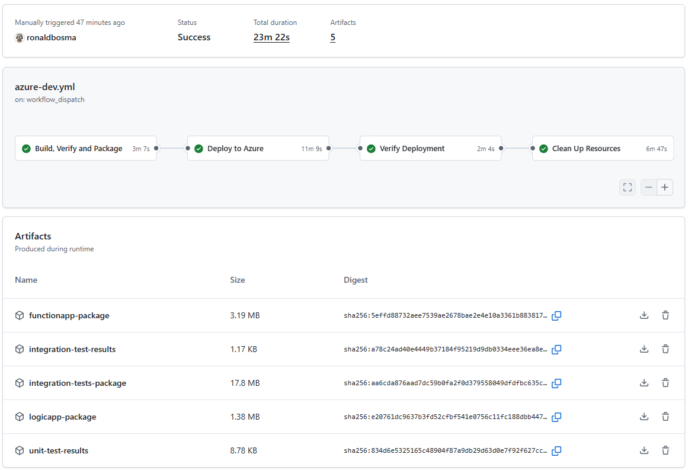
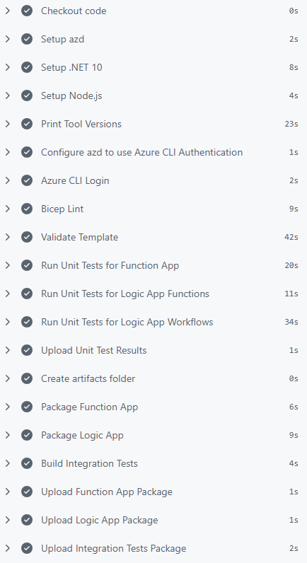
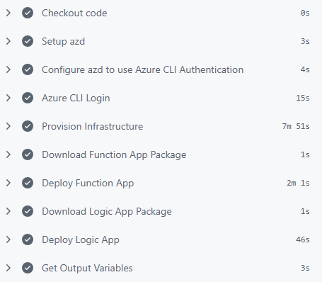
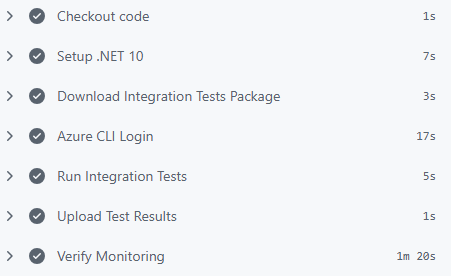
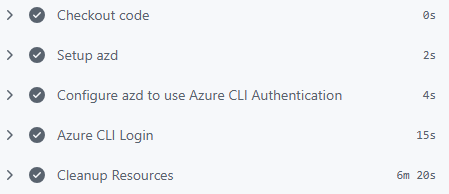
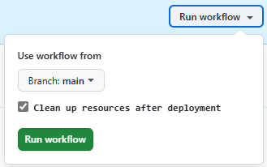

GitHub Actions Workflow for Azure Developer CLI (azd) Templates

I’ve been working with the Azure Developer CLI (azd) for the past year, creating several templates to simplify the deployment of Azure solutions. Each change to a template can affect both infrastructure and application behavior. To make changes with more confidence, I include a GitHub Actions workflow in my repositories that automates build, deployment, verification and cleanup.
This setup also helps when reviewing pull requests from other developers or automated tools. I can open a PR, let the workflow validate everything end to end and automatically remove all resources afterward.
Table of Contents
- Workflow Structure
- Common Configuration
- Build, Verify and Package
- Deploy to Azure
- Verify Deployment
- Clean Up Resources
- Add Cleanup Input Parameter
- Conclusion
Workflow Structure
My azd workflows usually consist of the following four jobs:
- Build, Verify and Package: Sets up the build environment, validates the Bicep template, executes unit tests and packages the project’s code and integration tests
- Deploy to Azure: Provisions the Azure infrastructure and deploys the packaged applications to the created resources
- Verify Deployment: Runs automated integration tests to verify the deployed resources and application. It can also verify monitoring and logging, for example by checking that availability tests succeed.
- Clean Up Resources: Removes all deployed Azure resources
See the following screenshot for a summary of a workflow run:

Splitting the workflow into different jobs makes it easier to understand and maintain. Each job has a clear purpose and a focused set of steps. If we can’t build the code or validation of the template fails, we don’t need to deploy anything. If deployment fails, we know the issue is in provisioning or deployment steps instead of application code. If verification fails, we know the issue is likely in application code or test code instead of infrastructure.
Every template has its own needs when it comes to the workflow. So, I created a gist with a full example of a workflow that has all jobs and steps mentioned above. You can use it as a starting point for your own templates and adjust it to your needs.
If you want to use Azure DevOps Pipelines instead of GitHub Actions, the overall structure and steps are similar. You can check out this pipeline example. It doesn’t have the exact same steps as the GitHub Actions workflow from the gist, but it follows the same general pattern of build, deploy, verify and clean up.
I used Azure Developer CLI: From Dev to Prod with Azure DevOps Pipelines for inspiration while creating my first azd workflow.
Common Configuration
If my template has hooks, they are usually written in PowerShell because I’m more proficient in it. So I set PowerShell Core as the default shell at the workflow level:
defaults:
run:
shell: pwsh # Use PowerShell Core for all scripts (the azd hooks are written in PowerShell)
I also define these env variables which are mandatory for azd:
env:
# Add a unique suffix to the environment name for pull requests to avoid name conflicts
AZURE_ENV_NAME: ${{ github.event.pull_request.number && format('{0}-pr{1}', vars.AZURE_ENV_NAME, github.event.pull_request.number) || vars.AZURE_ENV_NAME }}
AZURE_LOCATION: ${{ vars.AZURE_LOCATION }}
AZURE_SUBSCRIPTION_ID: ${{ secrets.AZURE_SUBSCRIPTION_ID || vars.AZURE_SUBSCRIPTION_ID }}
# Set additional configuration settings
# SAMPLE_ENVIRONMENT_VARIABLE: ${{ vars.SAMPLE_ENVIRONMENT_VARIABLE }}
I add a pull request suffix to AZURE_ENV_NAME so parallel PRs in the same repository don’t overwrite each other.
Notice the pattern ${{ secrets.AZURE_SUBSCRIPTION_ID || vars.AZURE_SUBSCRIPTION_ID }}. When you run azd pipeline config and choose OpenID Connect (OIDC) as the authentication mechanism, azd creates AZURE_CLIENT_ID, AZURE_TENANT_ID and AZURE_SUBSCRIPTION_ID as GitHub variables by default. However, Microsoft recommends using secrets for these values to reduce the risk of exposing them in logs. Supporting both secrets and vars makes migration easy.
I usually add a tip in the ‘Setting Up the Pipeline’ section of the README of a template to replace the variables with secrets for better security.
If a template has more parameters, I add those as environment variables too.
Most jobs will sign into Azure and need the id-token: write permission to use OIDC authentication, so I set that at job level. The contents: read permission is also required to checkout code if needed. For example:
build-verify-package:
name: Build, Verify and Package
runs-on: ubuntu-latest
permissions:
id-token: write # Required to fetch an OIDC token for Azure authentication
contents: read # Required to checkout code if needed
Most jobs also require azd, which can be installed using the Azure/setup-azd action:
- name: Setup azd
uses: Azure/setup-azd@v2
And lastly, they need to authenticate with Azure. I use Azure CLI authentication with azd commands. That way, I can use the azure/login to authenticate and the credentials are shared between azd commands and az (Azure CLI) commands used in hooks.
# Use Azure CLI authentication with azd commands so credentials are shared between azd commands and az (Azure CLI) commands used in hooks.
- name: Configure azd to use Azure CLI Authentication
run: |
azd config set auth.useAzCliAuth "true"
# Login to the Azure CLI with OpenID Connect (OIDC) using federated identity credentials.
- name: Azure CLI Login
uses: azure/login@v2
with:
client-id: ${{ secrets.AZURE_CLIENT_ID || vars.AZURE_CLIENT_ID }}
tenant-id: ${{ secrets.AZURE_TENANT_ID || vars.AZURE_TENANT_ID }}
subscription-id: ${{ secrets.AZURE_SUBSCRIPTION_ID || vars.AZURE_SUBSCRIPTION_ID }}
The page Use the Azure Login action with OpenID Connect describes how to set up OIDC authentication for GitHub Actions and Azure manually, but I recommend using
azd pipeline config, because it guides you through the process and automatically creates the necessary configuration in both Azure and GitHub.
Build, Verify and Package
In this job, I set up the required tools, validate infrastructure and package everything needed for deployment and verification.
See the screenshot below for an example of how this job looks in the workflow run:

If the template contains application code, this job usually installs additional tools besides azd such as .NET and Node.js.
I also print the tool versions. I once used a new Bicep feature that failed in the workflow because the runner had an older tool version. This step made the mismatch obvious:
- name: Print Tool Versions
run: |
az version
az bicep version
azd version
Write-Host ".NET SDK Version: $(dotnet --version)"
Write-Host "Node.js Version: $(node --version)"
Write-Host "npm Version: $(npm --version)"
Then I run Bicep lint:
- name: Bicep Lint
run: |
az bicep lint --file ./infra/main.bicep
My repositories include a bicepconfig.json where almost all rules are set to error, so the workflow fails quickly when the template doesn’t comply. For details, see Add linter settings in the Bicep config file.
If you’re using layered provisioning (currently in beta), make sure to lint every layer.
Linting is useful, but I also validate the full deployment at subscription scope because it catches additional issues (note that this requires Azure login):
- name: Validate Template
run: |
az deployment sub validate `
--template-file './infra/main.bicep' `
--location $env:AZURE_LOCATION `
--parameters environmentName=$env:AZURE_ENV_NAME `
location=$env:AZURE_LOCATION
If your main.bicep file has more parameters, add those to the validate command as well.
If the application code has unit tests, I run those too. The test results are stored in the artifacts folder and uploaded as workflow artifacts, which can be helpful for later inspection. Here’s an example of running .NET tests, but you can adapt it to your test framework and language:
- name: Run Unit Tests for Function App
run: |
dotnet run --report-trx --results-directory "${{ github.workspace }}/artifacts/TestResults/functionApp"
working-directory: ./src/functionApp/FunctionApp.Tests
- name: Run Unit Tests for Logic App Functions
run: |
dotnet run --report-trx --results-directory "${{ github.workspace }}/artifacts/TestResults/logicApp"
working-directory: ./src/logicApp/Functions.Tests
- name: Run Unit Tests for Logic App Workflows
run: |
dotnet run --report-trx --results-directory "${{ github.workspace }}/artifacts/TestResults/logicApp"
working-directory: ./src/logicApp/Workflows.Tests
- name: Upload Unit Test Results
if: always()
uses: actions/upload-artifact@v7
with:
name: unit-test-results
path: ./artifacts/TestResults/
retention-days: 1
Note that the if: always() condition ensures that test results are uploaded even if some tests fail, which is important for diagnosing issues.
I’m using Microsoft.Testing.Platform in my test projects, so I can use
dotnet runto execute tests. If you’re using VSTest, you can usedotnet testinstead. Just make sure to specify the correct logger and results directory to store the test results as artifacts.
After validation, I package each app with azd package and upload artifacts. Here’s an example for a Function App:
- name: Create artifacts folder
run: |
mkdir -p ./artifacts
- name: Package Function App
run: |
azd package functionApp --output-path ./artifacts/functionapp-package.zip --no-prompt
- name: Upload Function App Package
uses: actions/upload-artifact@v7
with:
name: functionapp-package
path: ./artifacts/functionapp-package.zip
retention-days: 1
A retention period of one day is enough for my PR validation scenario, but you can increase it if you need to debug runs later.
If the template includes integration tests, I build and publish those artifacts too:
- name: Build Integration Tests
run: |
dotnet build ./tests/IntegrationTests/IntegrationTests.csproj --configuration Release --output ./artifacts/integration-tests
- name: Upload Integration Tests Package
uses: actions/upload-artifact@v7
with:
name: integration-tests-package
path: ./artifacts/integration-tests/
retention-days: 1
I build the integration tests in this job, because if they don’t build, there’s no point in deploying to Azure. By building them here, I can fail fast and save time and resources.
Deploy to Azure
Because the applications are already packaged, infrastructure provisioning and application deployment are separated into different steps in the deploy job.
See the screenshot below for an example of how this job looks in the workflow run:

To provision the infrastructure, I run azd provision:
- name: Provision Infrastructure
run: |
azd provision --no-prompt
If the template includes application code, the corresponding artifact is downloaded and deployed with azd deploy. For example, to deploy a Function App from the package created in the previous job:
- name: Download Function App Package
uses: actions/download-artifact@v8
with:
name: functionapp-package
path: ./artifacts
- name: Deploy Function App
run: |
azd deploy functionApp --from-package ./artifacts/functionapp-package.zip --no-prompt
During provisioning, azd creates a file with environment variables (.azure/<environment-name>/.env) with the outputs from main.bicep. Later jobs often need those values to connect to deployed resources. In my workflows, I use this little helper script to export selected azd environment values into job outputs:
- name: Get Output Variables
id: get-outputs
run: |
$variableNames = @(
"AZURE_RESOURCE_GROUP",
"AZURE_ENV_ID",
"AZURE_API_MANAGEMENT_GATEWAY_URL",
"AZURE_APPLICATION_INSIGHTS_NAME",
"AZURE_KEY_VAULT_URI"
)
.\.github\workflows\scripts\export-azd-env-variables.ps1 -VariableNames $variableNames
The script reads values with azd env get-value, then writes them as job outputs in GitHub Actions so they can be used in later jobs. Don’t forget to add the output variables to the deploy job definition:
deploy:
name: Deploy to Azure
# ... OTHER PROPERTIES ...
outputs:
AZURE_RESOURCE_GROUP: ${{ steps.get-outputs.outputs.AZURE_RESOURCE_GROUP }}
AZURE_ENV_ID: ${{ steps.get-outputs.outputs.AZURE_ENV_ID }}
AZURE_API_MANAGEMENT_GATEWAY_URL: ${{ steps.get-outputs.outputs.AZURE_API_MANAGEMENT_GATEWAY_URL }}
AZURE_APPLICATION_INSIGHTS_NAME: ${{ steps.get-outputs.outputs.AZURE_APPLICATION_INSIGHTS_NAME }}
AZURE_KEY_VAULT_URI: ${{ steps.get-outputs.outputs.AZURE_KEY_VAULT_URI }}
Verify Deployment
The verification strategy depends on the template. See the screenshot below for an example of how this job could look in a workflow run:

For templates with end-to-end tests, I set up .NET, download the integration test artifact and run tests against deployed resources:
- name: Setup .NET 10
uses: actions/setup-dotnet@v5
with:
dotnet-version: '10.0.x'
- name: Download Integration Tests Package
uses: actions/download-artifact@v8
with:
name: integration-tests-package
path: ./artifacts/integration-tests
- name: Run Integration Tests
run: |
dotnet ./artifacts/integration-tests/IntegrationTests.dll --report-trx --results-directory ./artifacts/integration-tests/TestResults
working-directory: ./
env:
# Pass the necessary deployed resource properties as environment variables so the integration tests can access them.
AZURE_TENANT_ID: ${{ secrets.AZURE_TENANT_ID || vars.AZURE_TENANT_ID }}
AZURE_RESOURCE_GROUP: ${{ needs.deploy.outputs.AZURE_RESOURCE_GROUP }}
AZURE_API_MANAGEMENT_GATEWAY_URL: ${{ needs.deploy.outputs.AZURE_API_MANAGEMENT_GATEWAY_URL }}
AZURE_KEY_VAULT_URI: ${{ needs.deploy.outputs.AZURE_KEY_VAULT_URI }}
- name: Upload Test Results
if: always()
uses: actions/upload-artifact@v7
with:
name: integration-test-results
path: ./artifacts/integration-tests/TestResults/
retention-days: 1
Note the environment variables passed to the test job. They are taken from the outputs of the deploy job, which in turn are retrieved from the azd environment file created during provisioning. This way, the tests can connect to the correct deployed resources without hardcoding any values.
If you need secrets in your tests, for example an API key, you can store those in Key Vault and give the pipeline access to the vault. That way, you can keep secrets out of GitHub and still use them in your tests.
And if you need to call APIs protected by OAuth, you can use the same OIDC credentials from the workflow to get an access token in your tests. I explain how to do that in detail in my blog post Call OAuth-Protected APIs from GitHub Actions Using Federated Credentials.
Templates can also perform other types of verification. For example, check logging in Azure Monitor using a custom script:
- name: Verify Monitoring
run: |
.\.github\workflows\scripts\verify-monitoring.ps1 `
-ResourceGroupName "${{ needs.deploy.outputs.AZURE_RESOURCE_GROUP }}" `
-AppInsightsName "${{ needs.deploy.outputs.AZURE_APPLICATION_INSIGHTS_NAME }}"
If a script needs environment-specific values, use outputs from the deploy job.
Clean Up Resources
The cleanup job runs after deployment and verification to remove all deployed resources. See the screenshot below for an example of how this job looks in the workflow run:

It runs the azd down command:
- name: Cleanup Resources
run: |
azd down --purge --force --no-prompt
env:
# Pass the deployed resource identifiers as environment variables so azd hooks can access them
# during cleanup operations (e.g., for custom resource deletion or additional cleanup tasks).
AZURE_ENV_ID: ${{ needs.deploy.outputs.AZURE_ENV_ID }}
I use the --purge flag to make sure no resources are left behind in a soft-deleted state.
If your predown or postdown hooks need values from the deployed environment, pass them from deploy job outputs just like in verification.
For pull request validation, automatic cleanup keeps subscription hygiene under control and prevents unnecessary cost.
Add Cleanup Input Parameter
Besides PR verification, the workflow can also be used to spin up a temporary environment. That’s useful when you don’t have azd installed locally or when you want to demo a branch quickly.
By default, I clean up all resources at the end of the workflow, but I include a cleanup-resources input so I can keep resources when manually running the workflow:
workflow_dispatch:
inputs:
cleanup-resources:
description: 'Clean up resources after deployment'
required: false
default: true
type: boolean
When the workflow is triggered manually, this input appears in the UI:

When I uncheck this input in a manual run, the cleanup job is skipped. Later, I can trigger another run with cleanup enabled to remove the environment.
The condition on the cleanup job looks like this:
cleanup:
name: Clean Up Resources
needs: [ deploy, verify-deployment ]
if: ${{ success() && (github.event_name != 'workflow_dispatch' || github.event.inputs.cleanup-resources == 'true') }}
Conclusion
Using this workflow setup gives me confidence when changing azd templates. It validates infrastructure and application behavior and removes resources automatically after it’s done. It also makes it easier to verify external contributions from other developers or automated tools like Renovate or Dependabot.
The key is to keep jobs focused: build and package once, deploy predictably, verify behavior and clean up. With this setup, each pull request gets a repeatable end-to-end check that mirrors real usage.